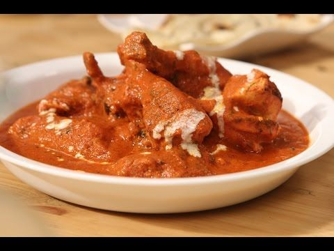

Butter Chicken

Description
Butter chicken, traditionally known as murgh makhani, is an Indian dish. It is a type of curry made from chicken with spiced tomato and butter (makkan) sauce. The sauce is known for its rich texture. It is a very popular non-vegetarian Indian dish.
- Prep time : 6-10 minutes
- Cook time : 21-25 minutes
- Serve : 4
- Level of Cooking : Easy
- Taste : Mild
Ingredients
- Ready-made chicken tikka pieces, 12-16
- Butter, 3 tablespoons
- Oil, 2 tablespoons
- Mace, 1 blade
- Finely chopped garlic, 1 tablespoon
- Red chilli powder, 1 teaspoon
- Fresh tomato puree, 1 cup
- Salt to taste
- Ready-made tomato puree, 2-3 tablespoons
- Garam masala powder, 1 teaspoon
- Honey, 2 tablespoons
- Fresh cream, 1 tablespoon
- Dried fenugreek leaf (kasuri methi) powder, 1 teaspoon to sprinkle
- Fresh coriander sprig for garnish
Method
- Heat 2 tablespoons of butter and oil in a non-stick pan. Add mace, cardamoms and garlic and sauté well.
- Add chilli powder and fresh tomato puree and mix well. Add salt, mix and bring it to a boil. Cover and cook for 2 minutes.
- Add ready-made tomato puree and mix well. Cover and cook till oil begins to rise to the surface.
- Add garam masala powder, honey, 2 tablespoons of cream and ¼ cup of water. Mix and bring the mixture to a boil.
- Take the pan off the heat and strain the gravy in another non-stick pan placed on heat. Add chicken tikka pieces and mix well.
- Add 1 tablespoon of cream, fenugreek leaves powder and the remaining butter. Mix till the butter melts.
- Transfer into a serving bowl, drizzle some cream, sprinkle dried fenugreek leaves powder and garnish with a coriander sprig. Serve hot.
Back to Odin Recipes